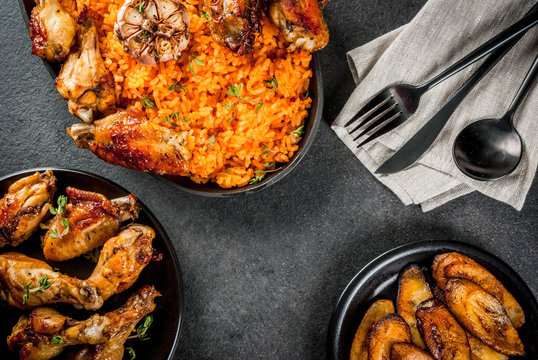

Who We Are
Chop Nigerian Cuisine is dedicated to bringing authentic traditional Nigerian flavors to life with a perfect blend of warmth, hospitality, and culinary artistry. Whether it’s dine-in, events, or catering—our experience is unforgettable.
Our Story
Over the years, Chop Nigerian Cuisine has become a cultural landmark, serving carefully crafted dishes inspired by generations of Nigerian tradition. Our team takes pride in preparing meals with passion, creativity, and respect for authentic taste.
From Jollof Rice to Suya, Asun, Moi Moi, and an exciting range of soups, we redefine excellence with every dish. Whether you're planning an event or dining with loved ones, Chop Nigerian Cuisine brings you comfort, flavor, and elegance.
Explore Our Menu